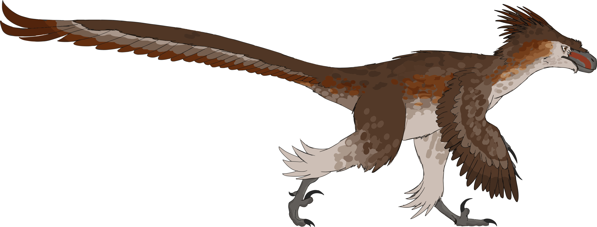

Raptors are among the dinosaurs that have undergone drastic changes in imagination. For many years, they appeared as scaly monsters on the big screen, but recent studies have significantly altered this perception. According to fossil findings, it is believed that most raptors were feathered rather than being scaly creatures.
It is because this shows us how science evolves with time. With the more number of fossils discovered, it becomes increasingly clear that the dinosaurs were very different from what older books and movies depicted them to be. Raptors are a fine example of this evolution in our understanding of dinosaurs brought about by just one discovery.
Previously, raptors were depicted as being largely scaly, somewhat like the small movie monsters we see today. However, recent discoveries have revealed that some raptor dinosaurs were actually feathered. This has led to a change in the depictions of raptors, making them more bird-like than ever before.
This is one of the reasons why there have been changes in our understanding of the dinosaur body. There is feather evidence found in dinosaurs associated with raptors. In some fossils, there are traces of feathers, while in others, there are quill knobs on the bone where feathers can be attached.
The reason why I love raptors is that they illustrate the dynamic nature of science. Raptors were once thought of as scaly monsters, but now we know that they have feathers and behave like birds. That does not mean they are less fascinating, in my view. On the contrary, it means that the actual dinosaurs were even more bizarre than those invented by humans.

To learn more about raptors and feathered dinosaurs, visit the Wikipedia article on raptors (Dromaeosauridae) .